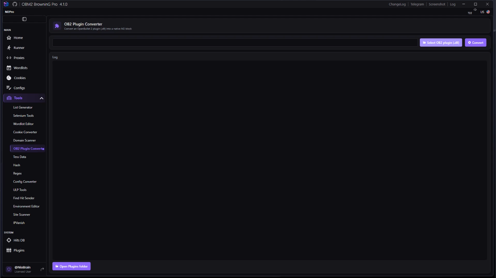
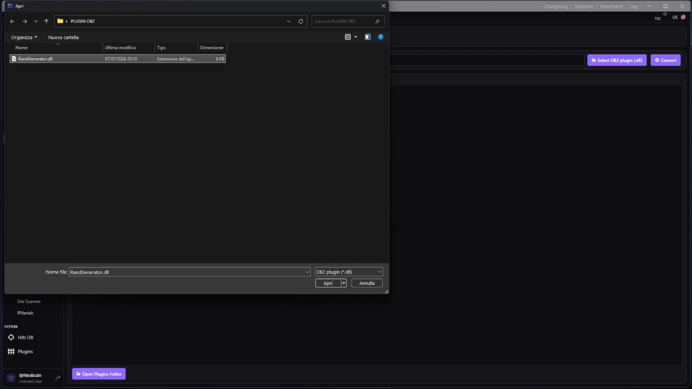
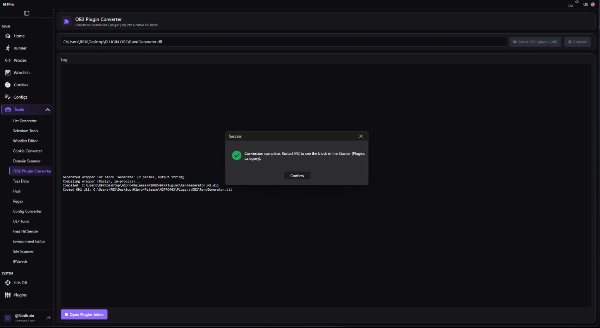
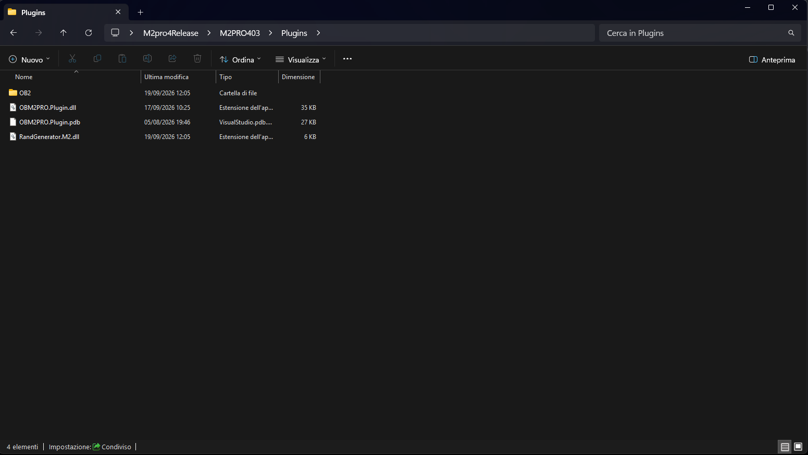
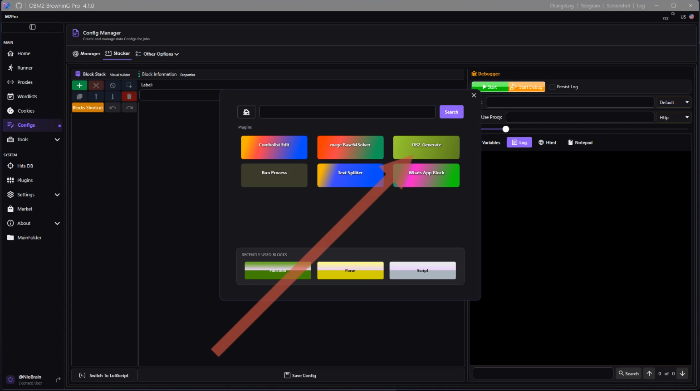
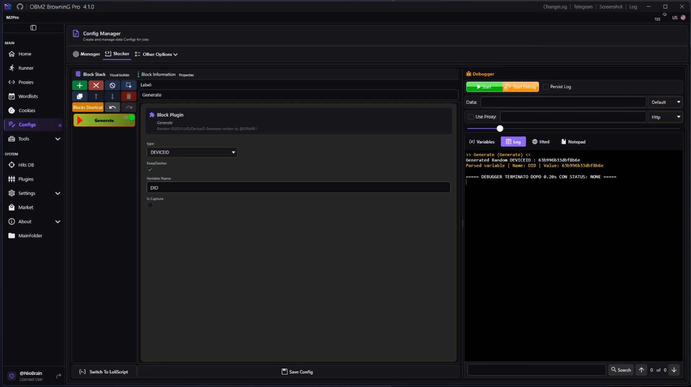

OBM2 Pro
OBM2 Pro
Converting an OpenBullet 2 plugin into an M2 block
Turn an OpenBullet 2 plugin (.dll) into a native M2 block, entirely inside the app — no .NET SDK, no command line, no manual paths.
Overview
M2 Pro can turn an OpenBullet 2 plugin (.dll) into a
native M2 block that shows up in the Stacker and configures like any built-in
block. The conversion runs inside the app and the wrapper is compiled
in-process, so the .NET SDK is not required. This guide uses the sample
RandGenerator plugin (a simple Random GUID / UUID / DeviceID generator).
What you need
| Requirement | Detail |
|---|---|
| M2 Pro | Version 4.1.0 or newer |
| Plugin file | The OB2 plugin .dll to convert (here: RandGenerator.dll) |
| .NET SDK | Not required — the standard .NET Desktop Runtime M2 already needs is enough |
Steps
1. Open the converter
In M2, go to Tools → OB2 Plugin Converter.

2. Select the plugin
Click Select OB2 plugin (.dll) and pick your plugin file — RandGenerator.dll.

3. Convert
Click Convert. The log shows the wrapper being generated and compiled in-process:
Generated wrapper for block 'Generate' (2 params, output String)
Compiling wrapper (Roslyn, in-process)...
Compiled: …\Plugins\RandGenerator.M2.dll
Copied OB2 dll: …\Plugins\OB2\RandGenerator.dllWhen it finishes you get “Conversion complete. Restart M2 to see the block in the Stacker (Plugins category).”

4. Check the produced files (optional)
Click Open Plugins folder. You should see:
Plugins\RandGenerator.M2.dll— the native M2 block (UI + serialization).Plugins\OB2\RandGenerator.dll— the original OB2 plugin (holds the logic).
Both are needed: the block delegates execution to the original plugin at runtime.

5. Restart M2
Close and reopen M2 so the new block is loaded.
6. Use the block
Open a config in the Stacker, click Add Block, and open the Plugins category. Your converted block is there (here shown as OB2_Generate). Add it, set its parameters, and Run.

The block configures like any native one — in this example a type dropdown
(DEVICEID / UUID / GUID), a KeepDashes option, a Variable Name, and
Is Capture. Running it produces the generated value:

Video walkthrough
Watch the full conversion on the Telegram channel: t.me/OBM2pro/669.
The video shows, end to end: opening the converter, selecting RandGenerator.dll,
converting (log compiling in-process, no SDK), the “restart M2” dialog, the two produced
files, restarting M2, and adding + running the block from the Stacker Plugins category.
Notes & limits
Restart required. A converted block appears only after restarting M2 (there is no hot-reload in this version).
- Re-converting in the same session. If you rebuild the same plugin
.dlland convert it again without restarting, M2 may still report the previously loaded block. Restart M2 to pick up the new version. - Self-contained blocks work best. Parameters go in by value and a single output comes back. Blocks that share state across the pipeline (cookies, a reused HTTP client, custom objects) are not bridged — the converter suits standalone blocks (generators, hashing, transforms, simple HTTP).
- Keep it in the app. A separate command-line converter exists for developers, but end users should always use this Tools page — path handling and compilation are automatic.
Troubleshooting
| Message | Cause / fix |
|---|---|
No [Block] found … | The selected DLL has no OB2 block methods, or it isn't an OB2 plugin. Pick the correct .dll. |
Wrapper compilation failed … | The log shows the compiler error. Make sure you're on M2 4.1.0+; older builds don't support in-process conversion. |
File in use … | A previously converted *.M2.dll is loaded by a running M2. Close M2 (or the running job) and convert again. |
| Block missing after restart | Confirm both files exist (Plugins\<name>.M2.dll and Plugins\OB2\<name>.dll) and that you fully restarted the app. |